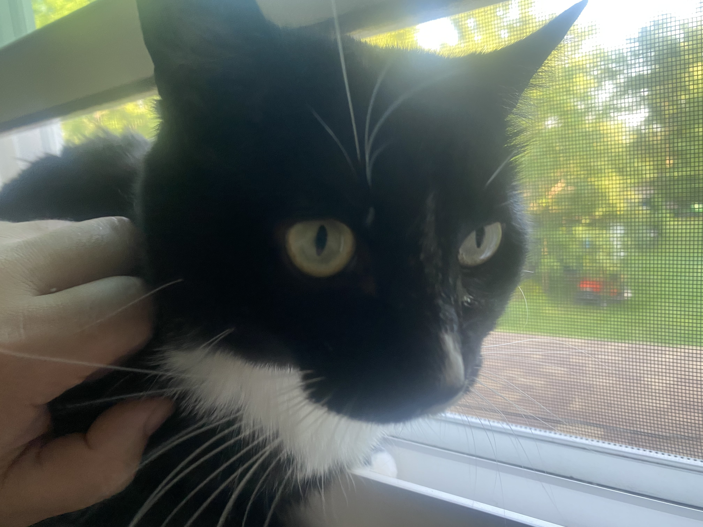

| Professionally | Personally | Contact Me |
|---|---|---|
|
|
I've lived in Portland, Chicago, Southern Vermont, but home is Western New York, between Buffalo and Niagara Falls, in a pretty rural area. So
rural that abandoned kittens show up on my doorstep from time to time. I've had Wendy the longest.  A few other things:
|
If you'd like to reach me, email is best. Please email markgerlach@gmail.com or CLICK HERE. |